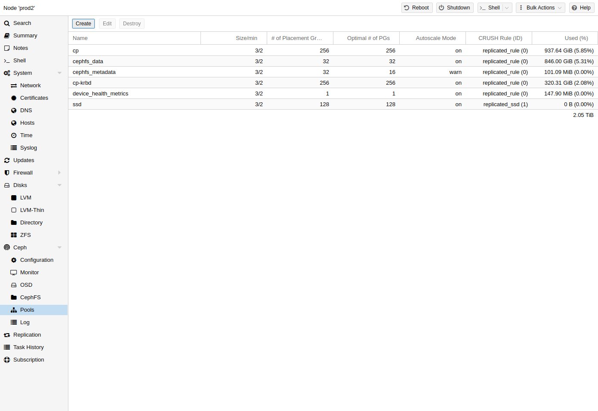
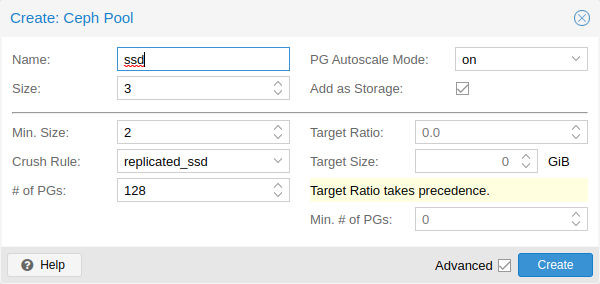

A pool is a logical group for storing objects. It holds a collection of objects,
known as Placement Groups (PG, pg_num).
You can create and edit pools from the command line or the web interface of any Proxmox VE host under Ceph → Pools.
When no options are given, we set a default of 128 PGs, a size of 3 replicas and a min_size of 2 replicas, to ensure no data loss occurs if any OSD fails.
Do not set a min_size of 1. A replicated pool with min_size of 1 allows I/O on an object when it has only 1 replica, which could lead to data loss, incomplete PGs or unfound objects.
It is advised that you either enable the PG-Autoscaler or calculate the PG number based on your setup. You can find the formula and the PG calculator [24] online. From Ceph Nautilus onward, you can change the number of PGs [25] after the setup.
The PG autoscaler [26] can
automatically scale the PG count for a pool in the background. Setting the
Target Size or Target Ratio advanced parameters helps the PG-Autoscaler to
make better decisions.
Example for creating a pool over the CLI.
pveceph pool create <pool-name> --add_storages
If you would also like to automatically define a storage for your pool, keep the ‘Add as Storage’ checkbox checked in the web interface, or use the command-line option --add_storages at pool creation.

The following options are available on pool creation, and partially also when editing a pool.
3.
warn, it produces a warning message when a pool
has a non-optimal PG count. Default: warn.
true (only visible on creation).
Advanced Options
2.
128.
target size if both are set.
Further information on Ceph pool handling can be found in the Ceph pool operation [27] manual.
Erasure coding (EC) is a form of ‘forward error correction’ codes that allows to recover from a certain amount of data loss. Erasure coded pools can offer more usable space compared to replicated pools, but they do that for the price of performance.
For comparison: in classic, replicated pools, multiple replicas of the data
are stored (size) while in erasure coded pool, data is split into k data
chunks with additional m coding (checking) chunks. Those coding chunks can be
used to recreate data should data chunks be missing.
The number of coding chunks, m, defines how many OSDs can be lost without
losing any data. The total amount of objects stored is k + m.
Erasure coded (EC) pools can be created with the pveceph CLI tooling.
Planning an EC pool needs to account for the fact, that they work differently
than replicated pools.
The default min_size of an EC pool depends on the m parameter. If m = 1,
the min_size of the EC pool will be k. The min_size will be k + 1 if
m > 1. The Ceph documentation recommends a conservative min_size of k + 2
[28].
If there are less than min_size OSDs available, any IO to the pool will be
blocked until there are enough OSDs available again.
When planning an erasure coded pool, keep an eye on the min_size as it
defines how many OSDs need to be available. Otherwise, IO will be blocked.
For example, an EC pool with k = 2 and m = 1 will have size = 3,
min_size = 2 and will stay operational if one OSD fails. If the pool is
configured with k = 2, m = 2, it will have a size = 4 and min_size = 3
and stay operational if one OSD is lost.
To create a new EC pool, run the following command:
pveceph pool create <pool-name> --erasure-coding k=2,m=1
Optional parameters are failure-domain and device-class. If you
need to change any EC profile settings used by the pool, you will have to
create a new pool with a new profile.
This will create a new EC pool plus the needed replicated pool to store the RBD
omap and other metadata. In the end, there will be a <pool name>-data and
<pool name>-metadata pool. The default behavior is to create a matching storage
configuration as well. If that behavior is not wanted, you can disable it by
providing the --add_storages 0 parameter. When configuring the storage
configuration manually, keep in mind that the data-pool parameter needs to be
set. Only then will the EC pool be used to store the data objects. For example:
The optional parameters --size, --min_size and --crush_rule will be
used for the replicated metadata pool, but not for the erasure coded data pool.
If you need to change the min_size on the data pool, you can do it later.
The size and crush_rule parameters cannot be changed on erasure coded
pools.
If there is a need to further customize the EC profile, you can do so by
creating it with the Ceph tools directly [29], and
specify the profile to use with the profile parameter.
For example:
pveceph pool create <pool-name> --erasure-coding profile=<profile-name>
You can add an already existing EC pool as storage to Proxmox VE. It works the same
way as adding an RBD pool but requires the extra data-pool option.
pvesm add rbd <storage-name> --pool <replicated-pool> --data-pool <ec-pool>
Do not forget to add the keyring and monhost option for any external
Ceph clusters, not managed by the local Proxmox VE cluster.
To destroy a pool via the GUI, select a node in the tree view and go to the Ceph → Pools panel. Select the pool to destroy and click the Destroy button. To confirm the destruction of the pool, you need to enter the pool name.
Run the following command to destroy a pool. Specify the -remove_storages to also remove the associated storage.
pveceph pool destroy <name>
Pool deletion runs in the background and can take some time. You will notice the data usage in the cluster decreasing throughout this process.
The PG autoscaler allows the cluster to consider the amount of (expected) data stored in each pool and to choose the appropriate pg_num values automatically. It is available since Ceph Nautilus.
You may need to activate the PG autoscaler module before adjustments can take effect.
ceph mgr module enable pg_autoscaler
The autoscaler is configured on a per pool basis and has the following modes:
|
warn |
A health warning is issued if the suggested |
|
on |
The |
|
off |
No automatic |
The scaling factor can be adjusted to facilitate future data storage with the
target_size, target_size_ratio and the pg_num_min options.
By default, the autoscaler considers tuning the PG count of a pool if it is off by a factor of 3. This will lead to a considerable shift in data placement and might introduce a high load on the cluster.
You can find a more in-depth introduction to the PG autoscaler on Ceph’s Blog - New in Nautilus: PG merging and autotuning.
[25] Placement Groups https://docs.ceph.com/en/squid/rados/operations/placement-groups/
[26] Automated Scaling https://docs.ceph.com/en/squid/rados/operations/placement-groups/#automated-scaling
[27] Ceph pool operation https://docs.ceph.com/en/squid/rados/operations/pools/
[28] Ceph Erasure Coded Pool Recovery https://docs.ceph.com/en/squid/rados/operations/erasure-code/#erasure-coded-pool-recovery
[29] Ceph Erasure Code Profile https://docs.ceph.com/en/squid/rados/operations/erasure-code/#erasure-code-profiles